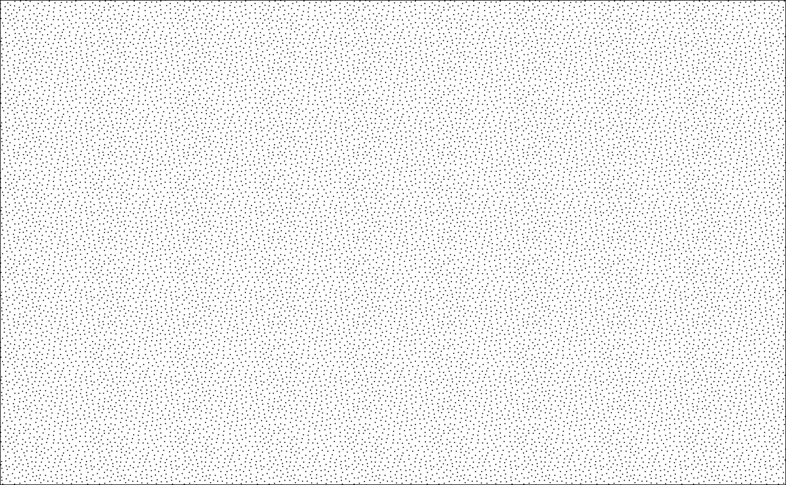

Retrieve a single geologic pattern as defined in the FGDC Digital Cartographic Standard for Geologic Map Symbolization by the Geologic Data Subcommittee (GDS) of the Federal Geographic Data Committee (FGDC).
Usage
geo_pattern(
code,
scale = 2,
col = NULL,
fill = NULL,
alpha = NULL,
bg = "white"
)
geo_grob(code, col = NULL, fill = NULL, alpha = NULL, bg = "white")Arguments
- code
The number corresponding to the pattern to return. Strings and numbers are permitted. See the "pattern numbers" in the full pattern chart for valid
codevalues.- scale
The visual scale of the pattern.
- col
The color to use for the lines of the pattern.
- fill
The color with which to fill the pattern.
- alpha
The transparency to use for the fill of the pattern.
- bg
The background color to use for the pattern.
Value
geo_grob() returns a grob object with a single
instance of the desired pattern. geo_pattern() returns a
GridPattern object with a repeated instance of the
desired pattern.
Details
These patterns were originally processed and optimized by Daven Quinn and are hosted on GitHub.
See also
FGDC patterns:
grid.pattern_geo(),
scale_fill_geopattern()
Examples
library(grid)
# Get a generic igneous pattern
pattern1 <- geo_pattern(code = "313-K")
# Get the pattern for a sandstone
pattern2 <- geo_pattern(code = "607")
# plot the two patterns
grid.newpage()
grid.draw(rectGrob(gp = gpar(fill = pattern1)))
grid.newpage()
grid.draw(rectGrob(gp = gpar(fill = pattern2)))
